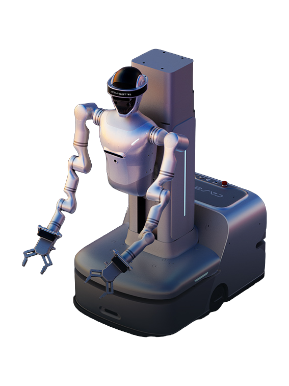

W1
A wheeled humanoid robot from China.
Sources retrieved: 28 September 2026 (A)
- Indicative price
- Not stated
- Intended use, per the manufacturer
- Not statedThe page lists five scenario headings with short Chinese descriptions covering industrial manufacturing, warehousing pick-and-place, retail product picking and guidance, machine-room/workshop inspection, and education/research task customization. No English-language version of this page exists (checked with a ?lang=en request, byte-identical to the Chinese page), so no verbatim English quote can be given for these categories.Source and note: Intended use, per the manufacturerA casbot.tech/product/w1 · Retrieved 28 September 2026

Manufacturer's rendering.
Specifications
18/32 specifications disclosed 14 not stated
14 fields hidden
How to read the figuresShow guideClose
Not statedThe manufacturer states nothing about this field.YesStated: the robot has this.NoStated: the robot does not have this.A marker with an asterisk (*) also carries a caveat.
Select a source marker for source details and notes.
Physical10/13 disclosed
Power3/5 disclosed
Sensing and autonomy3/6 disclosed
Payload and expansion2/3 disclosed
Ethernet (100 Mbps)Commercial0/1 disclosed
Compliance & certifications0/4 disclosed
Against the field
Each strip holds every robot of this type in the guide that states the figure, one bar per group of values. Further right means a larger figure, not a better robot.
Height
112–210cm44.1–82.7inOur conversion from 112–210 cm. The manufacturer does not state an imperial figure itself, so the conversion has no source of its own.
100 wheeled humanoids state a height
W1 states a range, not one figure, so it is shown as a band and not ranked against the others.
Weight
approximately 260kgapproximately 573lbOur conversion from 260 kg. The manufacturer does not state an imperial figure itself, so the conversion has no source of its own.
86 wheeled humanoids state a weight
4 state a higher figure, 79 a lower one. Log scale: each step along the axis multiplies the value.
Degrees of freedom
20DoF
91 wheeled humanoids state degrees of freedom
69 state a higher figure, 12 a lower one. 7 more state exactly the same figure.
Runtime
240–300minNote: load condition not stated
99 wheeled humanoids state a runtime
W1 states a range, not one figure, so it is shown as a band and not ranked against the others.
Max speed
4.32km/h2.68mphOur conversion from 1.2 m/s. The manufacturer does not state an imperial figure itself, so the conversion has no source of its own.
87 wheeled humanoids state a top speed
48 state a higher figure, 15 a lower one. 5 more state exactly the same figure.
Notes
CASBOT's own site also lists a separate bipedal product, CASBOT 02 (CASBOT O2), distinct from W1, the wheeled product.
Total degrees of freedom (20) is broken down on the page as: head 2 (yaw, pitch) + waist 1 (pitch) + lift column 1 + chassis 2 + arms 7x2 = 20; the gripper end-effector's own 2 DoF is listed separately and can be upgraded to a dexterous hand.
Height is adjustable via the lift column (112-210cm); the same range is confirmed separately as the third figure in the compact/extended footprint dimensions (0.95x0.615x1.12m / 0.95x0.615x2.1m).
A whole-machine load-capacity figure of 10kg appears in the page's core-parameters summary (Chinese page; no English version exists for this site), separate from the 5kg per-arm rated payload in the arm-parameters table; the robot does not walk, so this whole-machine figure is the closest available match to a whole-body payload.
Battery is stated as 48V, 25Ah; no combined Wh figure is given.
The page's accessories list includes one charging dock, distinct from the separately named autonomous-charging method described elsewhere on the page.
Page disclaimer: all parameters and performance figures are stated as derived from theoretical calculation and laboratory testing, and actual performance may vary by environment and conditions.
Sources
One line per source, not per figure: a source has one retrieval date.
- Acasbot.tech/product/w1Main source. Retrieved 28 September 2026